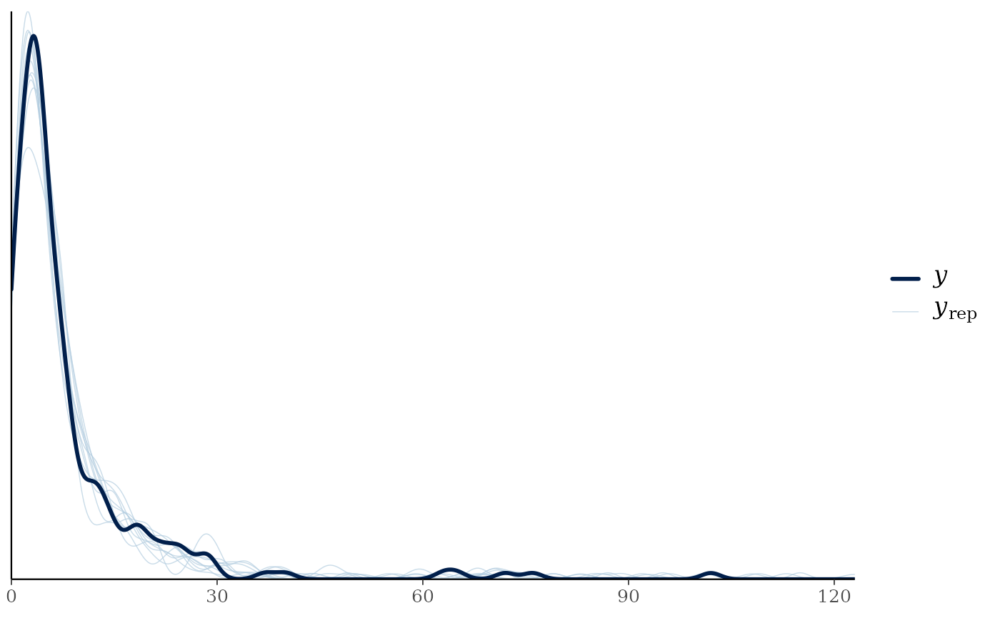
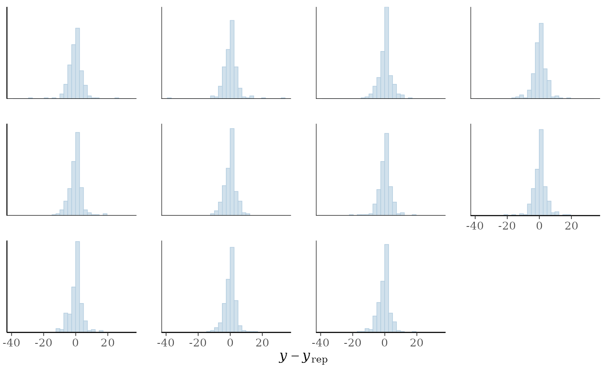
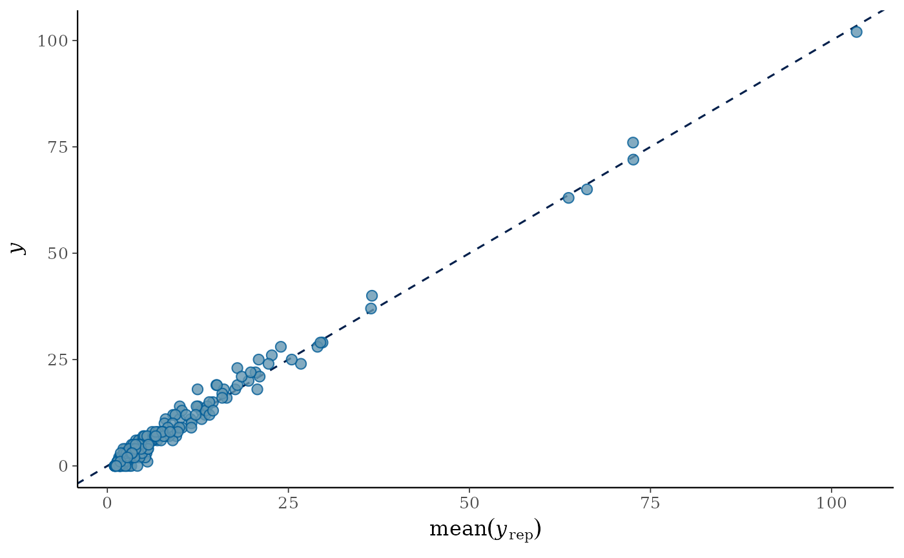
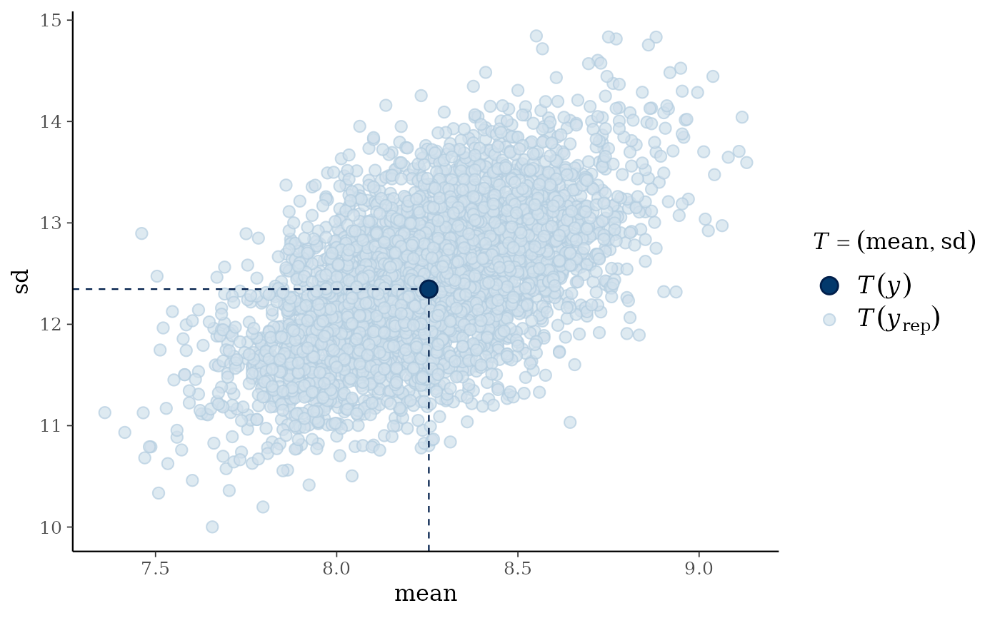
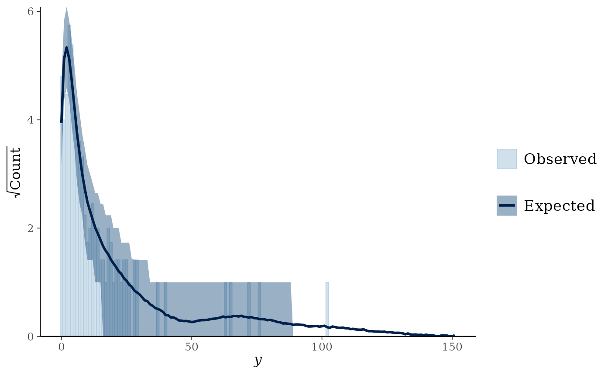
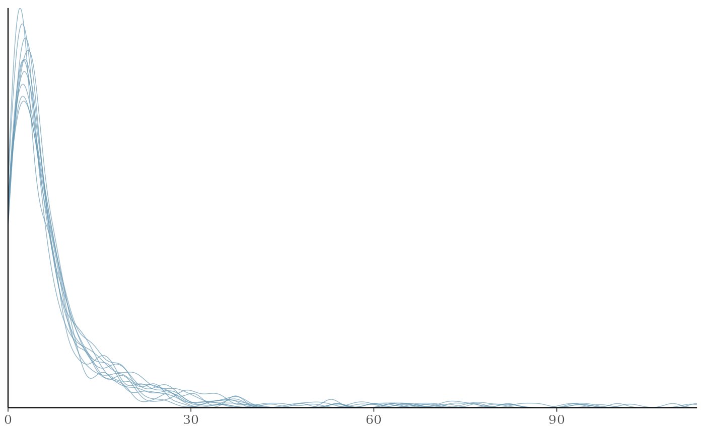

Perform posterior predictive checks with the help of the bayesplot package.
Usage
# S3 method for class 'brmsfit'
pp_check(
object,
type,
ndraws = NULL,
prefix = c("ppc", "ppd"),
group = NULL,
x = NULL,
newdata = NULL,
resp = NULL,
draw_ids = NULL,
nsamples = NULL,
subset = NULL,
...
)Arguments
- object
An object of class
brmsfit.- type
Type of the ppc plot as given by a character string. See
PPCfor an overview of currently supported types. You may also use an invalid type (e.g.type = "xyz") to get a list of supported types in the resulting error message.- ndraws
Positive integer indicating how many posterior draws should be used. If
NULLall draws are used. If not specified, the number of posterior draws is chosen automatically. Ignored ifdraw_idsis notNULL.- prefix
The prefix of the bayesplot function to be applied. Either `"ppc"` (posterior predictive check; the default) or `"ppd"` (posterior predictive distribution), the latter being the same as the former except that the observed data is not shown for `"ppd"`.
- group
Optional name of a factor variable in the model by which to stratify the ppc plot. This argument is required for ppc
*_groupedtypes and ignored otherwise.- x
Optional name of a variable in the model. Only used for ppc types having an
xargument and ignored otherwise.- newdata
An optional data.frame for which to evaluate predictions. If
NULL(default), the original data of the model is used.NAvalues within factors (excluding grouping variables) are interpreted as if all dummy variables of this factor are zero. This allows, for instance, to make predictions of the grand mean when using sum coding.NAvalues within grouping variables are treated as a new level.- resp
Optional names of response variables. If specified, predictions are performed only for the specified response variables.
- draw_ids
An integer vector specifying the posterior draws to be used. If
NULL(the default), all draws are used.- nsamples
Deprecated alias of
ndraws.- subset
Deprecated alias of
draw_ids.- ...
Further arguments passed to
predict.brmsfitas well as to the PPC function specified intype.
Details
For a detailed explanation of each of the ppc functions,
see the PPC
documentation of the bayesplot
package.
Examples
# \dontrun{
fit <- brm(count ~ zAge + zBase * Trt
+ (1|patient) + (1|obs),
data = epilepsy, family = poisson())
#> Compiling Stan program...
#> Start sampling
#>
#> SAMPLING FOR MODEL 'anon_model' NOW (CHAIN 1).
#> Chain 1:
#> Chain 1: Gradient evaluation took 5.1e-05 seconds
#> Chain 1: 1000 transitions using 10 leapfrog steps per transition would take 0.51 seconds.
#> Chain 1: Adjust your expectations accordingly!
#> Chain 1:
#> Chain 1:
#> Chain 1: Iteration: 1 / 2000 [ 0%] (Warmup)
#> Chain 1: Iteration: 200 / 2000 [ 10%] (Warmup)
#> Chain 1: Iteration: 400 / 2000 [ 20%] (Warmup)
#> Chain 1: Iteration: 600 / 2000 [ 30%] (Warmup)
#> Chain 1: Iteration: 800 / 2000 [ 40%] (Warmup)
#> Chain 1: Iteration: 1000 / 2000 [ 50%] (Warmup)
#> Chain 1: Iteration: 1001 / 2000 [ 50%] (Sampling)
#> Chain 1: Iteration: 1200 / 2000 [ 60%] (Sampling)
#> Chain 1: Iteration: 1400 / 2000 [ 70%] (Sampling)
#> Chain 1: Iteration: 1600 / 2000 [ 80%] (Sampling)
#> Chain 1: Iteration: 1800 / 2000 [ 90%] (Sampling)
#> Chain 1: Iteration: 2000 / 2000 [100%] (Sampling)
#> Chain 1:
#> Chain 1: Elapsed Time: 4.223 seconds (Warm-up)
#> Chain 1: 2.286 seconds (Sampling)
#> Chain 1: 6.509 seconds (Total)
#> Chain 1:
#>
#> SAMPLING FOR MODEL 'anon_model' NOW (CHAIN 2).
#> Chain 2:
#> Chain 2: Gradient evaluation took 5.2e-05 seconds
#> Chain 2: 1000 transitions using 10 leapfrog steps per transition would take 0.52 seconds.
#> Chain 2: Adjust your expectations accordingly!
#> Chain 2:
#> Chain 2:
#> Chain 2: Iteration: 1 / 2000 [ 0%] (Warmup)
#> Chain 2: Iteration: 200 / 2000 [ 10%] (Warmup)
#> Chain 2: Iteration: 400 / 2000 [ 20%] (Warmup)
#> Chain 2: Iteration: 600 / 2000 [ 30%] (Warmup)
#> Chain 2: Iteration: 800 / 2000 [ 40%] (Warmup)
#> Chain 2: Iteration: 1000 / 2000 [ 50%] (Warmup)
#> Chain 2: Iteration: 1001 / 2000 [ 50%] (Sampling)
#> Chain 2: Iteration: 1200 / 2000 [ 60%] (Sampling)
#> Chain 2: Iteration: 1400 / 2000 [ 70%] (Sampling)
#> Chain 2: Iteration: 1600 / 2000 [ 80%] (Sampling)
#> Chain 2: Iteration: 1800 / 2000 [ 90%] (Sampling)
#> Chain 2: Iteration: 2000 / 2000 [100%] (Sampling)
#> Chain 2:
#> Chain 2: Elapsed Time: 4.191 seconds (Warm-up)
#> Chain 2: 2.348 seconds (Sampling)
#> Chain 2: 6.539 seconds (Total)
#> Chain 2:
#>
#> SAMPLING FOR MODEL 'anon_model' NOW (CHAIN 3).
#> Chain 3:
#> Chain 3: Gradient evaluation took 4.2e-05 seconds
#> Chain 3: 1000 transitions using 10 leapfrog steps per transition would take 0.42 seconds.
#> Chain 3: Adjust your expectations accordingly!
#> Chain 3:
#> Chain 3:
#> Chain 3: Iteration: 1 / 2000 [ 0%] (Warmup)
#> Chain 3: Iteration: 200 / 2000 [ 10%] (Warmup)
#> Chain 3: Iteration: 400 / 2000 [ 20%] (Warmup)
#> Chain 3: Iteration: 600 / 2000 [ 30%] (Warmup)
#> Chain 3: Iteration: 800 / 2000 [ 40%] (Warmup)
#> Chain 3: Iteration: 1000 / 2000 [ 50%] (Warmup)
#> Chain 3: Iteration: 1001 / 2000 [ 50%] (Sampling)
#> Chain 3: Iteration: 1200 / 2000 [ 60%] (Sampling)
#> Chain 3: Iteration: 1400 / 2000 [ 70%] (Sampling)
#> Chain 3: Iteration: 1600 / 2000 [ 80%] (Sampling)
#> Chain 3: Iteration: 1800 / 2000 [ 90%] (Sampling)
#> Chain 3: Iteration: 2000 / 2000 [100%] (Sampling)
#> Chain 3:
#> Chain 3: Elapsed Time: 4.274 seconds (Warm-up)
#> Chain 3: 2.328 seconds (Sampling)
#> Chain 3: 6.602 seconds (Total)
#> Chain 3:
#>
#> SAMPLING FOR MODEL 'anon_model' NOW (CHAIN 4).
#> Chain 4:
#> Chain 4: Gradient evaluation took 4e-05 seconds
#> Chain 4: 1000 transitions using 10 leapfrog steps per transition would take 0.4 seconds.
#> Chain 4: Adjust your expectations accordingly!
#> Chain 4:
#> Chain 4:
#> Chain 4: Iteration: 1 / 2000 [ 0%] (Warmup)
#> Chain 4: Iteration: 200 / 2000 [ 10%] (Warmup)
#> Chain 4: Iteration: 400 / 2000 [ 20%] (Warmup)
#> Chain 4: Iteration: 600 / 2000 [ 30%] (Warmup)
#> Chain 4: Iteration: 800 / 2000 [ 40%] (Warmup)
#> Chain 4: Iteration: 1000 / 2000 [ 50%] (Warmup)
#> Chain 4: Iteration: 1001 / 2000 [ 50%] (Sampling)
#> Chain 4: Iteration: 1200 / 2000 [ 60%] (Sampling)
#> Chain 4: Iteration: 1400 / 2000 [ 70%] (Sampling)
#> Chain 4: Iteration: 1600 / 2000 [ 80%] (Sampling)
#> Chain 4: Iteration: 1800 / 2000 [ 90%] (Sampling)
#> Chain 4: Iteration: 2000 / 2000 [100%] (Sampling)
#> Chain 4:
#> Chain 4: Elapsed Time: 3.884 seconds (Warm-up)
#> Chain 4: 2.284 seconds (Sampling)
#> Chain 4: 6.168 seconds (Total)
#> Chain 4:
pp_check(fit) # shows dens_overlay plot by default
#> Using 10 posterior draws for ppc type 'dens_overlay' by default.

pp_check(fit, type = "error_hist", ndraws = 11)
#> `stat_bin()` using `bins = 30`. Pick better value `binwidth`.

pp_check(fit, type = "scatter_avg", ndraws = 100)

pp_check(fit, type = "stat_2d")
#> Using all posterior draws for ppc type 'stat_2d' by default.
#> Note: in most cases the default test statistic 'mean' is too weak to detect anything of interest.

pp_check(fit, type = "rootogram")
#> Using all posterior draws for ppc type 'rootogram' by default.

pp_check(fit, type = "loo_pit")
#> Error in pp_check.brmsfit(fit, type = "loo_pit"): Type 'loo_pit' is not a valid ppc type. Valid types are:
#> 'bars', 'bars_grouped', 'boxplot', 'dens', 'dens_overlay', 'dens_overlay_grouped', 'dots', 'ecdf_overlay', 'ecdf_overlay_grouped', 'error_binned', 'error_hist', 'error_hist_grouped', 'error_scatter', 'error_scatter_avg', 'error_scatter_avg_grouped', 'error_scatter_avg_vs_x', 'freqpoly', 'freqpoly_grouped', 'hist', 'intervals', 'intervals_grouped', 'km_overlay', 'km_overlay_grouped', 'loo_intervals', 'loo_pit_ecdf', 'loo_pit_overlay', 'loo_pit_qq', 'loo_ribbon', 'pit_ecdf', 'pit_ecdf_grouped', 'ribbon', 'ribbon_grouped', 'rootogram', 'scatter', 'scatter_avg', 'scatter_avg_grouped', 'stat', 'stat_2d', 'stat_freqpoly', 'stat_freqpoly_grouped', 'stat_grouped', 'violin_grouped'
## get an overview of all valid types
pp_check(fit, type = "xyz")
#> Error in pp_check.brmsfit(fit, type = "xyz"): Type 'xyz' is not a valid ppc type. Valid types are:
#> 'bars', 'bars_grouped', 'boxplot', 'dens', 'dens_overlay', 'dens_overlay_grouped', 'dots', 'ecdf_overlay', 'ecdf_overlay_grouped', 'error_binned', 'error_hist', 'error_hist_grouped', 'error_scatter', 'error_scatter_avg', 'error_scatter_avg_grouped', 'error_scatter_avg_vs_x', 'freqpoly', 'freqpoly_grouped', 'hist', 'intervals', 'intervals_grouped', 'km_overlay', 'km_overlay_grouped', 'loo_intervals', 'loo_pit_ecdf', 'loo_pit_overlay', 'loo_pit_qq', 'loo_ribbon', 'pit_ecdf', 'pit_ecdf_grouped', 'ribbon', 'ribbon_grouped', 'rootogram', 'scatter', 'scatter_avg', 'scatter_avg_grouped', 'stat', 'stat_2d', 'stat_freqpoly', 'stat_freqpoly_grouped', 'stat_grouped', 'violin_grouped'
## get a plot without the observed data
pp_check(fit, prefix = "ppd")
#> Using 10 posterior draws for ppc type 'dens_overlay' by default.

# }